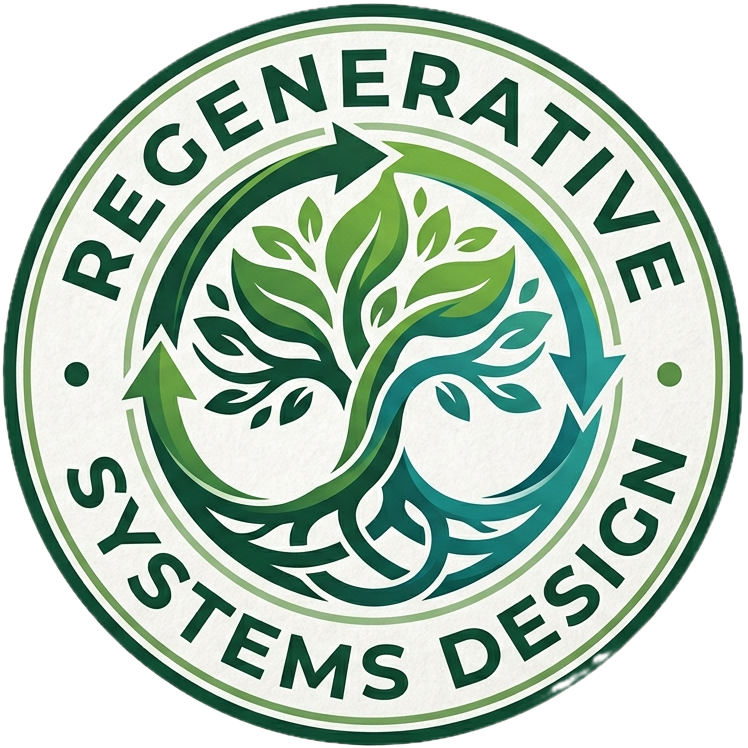

Musician at heart, amateur poet, polymath wannabe, father of two amazing young boys, and slave to an insatiable curiosity of finding ways to make the earth a thriving and fertile organism for all earthlings by designing tools and frameworks to establish regenerative human settlements — bridging permaculture, rubanisation, DePIN, and leveraging Bitcoin's timechain.
Founder of Chaorder Networks, a web, fintech, blokchain and systems design oriented consultancy that among other things has helped with Bitcoin adoption and self custody management.
Co-founder of BitSultans, a B2B consultancy firm specializing in data backup, disaster recovery, and business continuity solutions for mission-critical infrastructure.
Founder of Rubania, an open-source platform with the mission to deploy a tissue of millions of regenerative ruban settlements accross the earth to reboot our human potential for good.